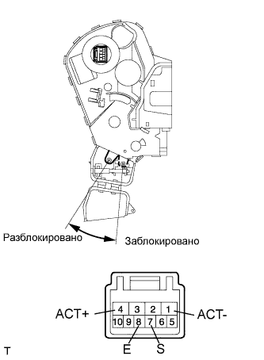

ЗАМОК ДВЕРИ БАГАЖНОГО ОТДЕЛЕНИЯ > ПРОВЕРКА |
| 1. ПРОВЕРЬТЕ ДВЕРЬ БАГАЖНОГО ОТДЕЛЕНИЯ С ЭЛЕКТРОДВИГАТЕЛЕМ ЗАМКА В СБОРЕ |
|  |
Подайте напряжение аккумуляторной батареи на электродвигатель замка двери и проверьте его работу.
| Условия измерений | Заданные условия |
| Положительный (+) вывод аккумуляторной батареи → 4 (ACT+) Отрицательный (-) вывод аккумуляторной батареи → 1 (ACT-) | Заблокирован |
| Положительный (+) вывод аккумуляторной батареи → 1 (ACT-) Отрицательный (-) вывод аккумуляторной батареи → 4 (ACT+) | Разблокирован |
Измерьте сопротивление позиционного переключателя замка двери.
| Контакты для подключения диагностического прибора | Положение выключателя | Заданные условия |
| 7 (S) - 8 (E) | Заблокирован | 10 кОм или более |
| 7 (S) - 8 (E) | Разблокирован | Менее 1 Ом |